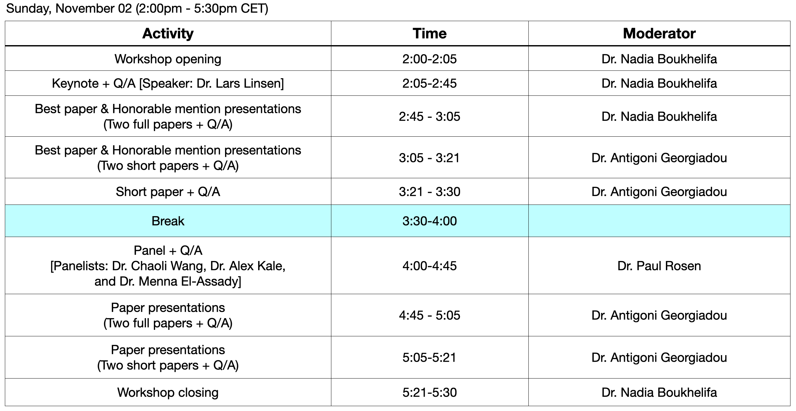

Program

Keynote
- Presenter: Dr. Lars Linsen [University of Münster, Germany]

- Title: Quantifying and Communicating Uncertainty in Visual Data Analysis: Approaches and Challenges
- Bio: Lars Linsen is a Full Professor of Computer Science at the University of Münster, Germany, where he is leading the Visualization and Graphics group (VISIX). He received his academic degrees in Computer Science from the University of Karlsruhe, Germany, including a Ph.D. degree in 2001. Further steps in his career include academic positions at the University of California, Davis, U.S.A., the University of Greifswald, Germany, and the Jacobs University, Bremen, Germany. His research interests are in scientific visualization, medical visualization, and multivariate data visualization, which include aspects of uncertainty visualization.